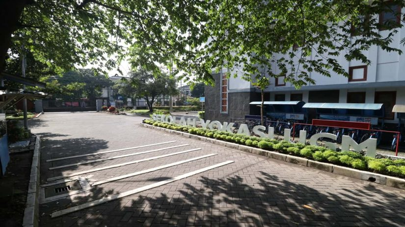

Sistem Informasi
Geografis
Mempersiapkan sarjana terapan bidang geospasial yang menguasai pengembangan teknologi Sistem Informasi Geografis (SIG) dengan kemampuan Penginderaan Jauh, Kartografi, Survei Kewilayahan, dan Pemrograman Spasial.

Keunggulan
Penyedia Sumber Daya Manusia (SDM) Informasi Geospasial (IG) Profesional Sistem Informasi Geografis (SIG), Penginderaan Jauh (PJ) dan Kartografi.
Prospek Karir
- Kementerian (Kementerian Pekerjaan Umum, Kementerian ESDM, Kementerian Lingkungan Hidup dan Kehutanan, Kementerian Pertanian, Kementerian Kelautan & Perikanan, dll)
- Badan Informasi Geospasial (BIG)
- Lembaga Penerbangan dan Antariksa Nasional (LAPAN)
- TNI AU, Badan Intelijen Negara (BIN), POLRI
- Pemerintah Daerah
- BUMN (PT Virama Karya)
- Perusahaan Swasta (PT. Exsamap, PT. Torganda, dll)